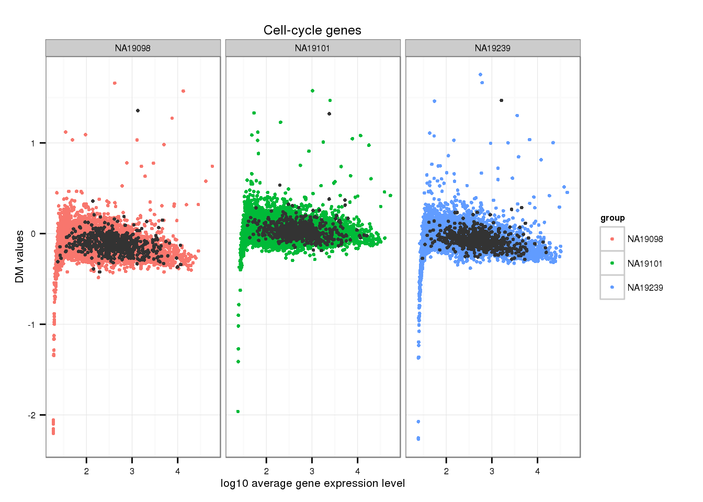
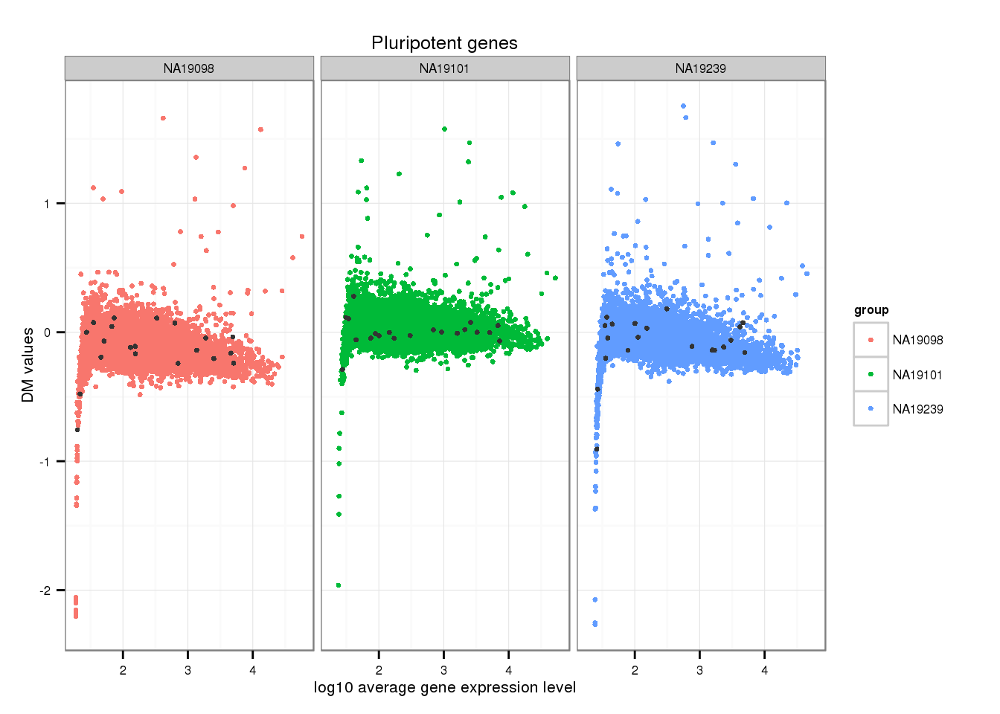
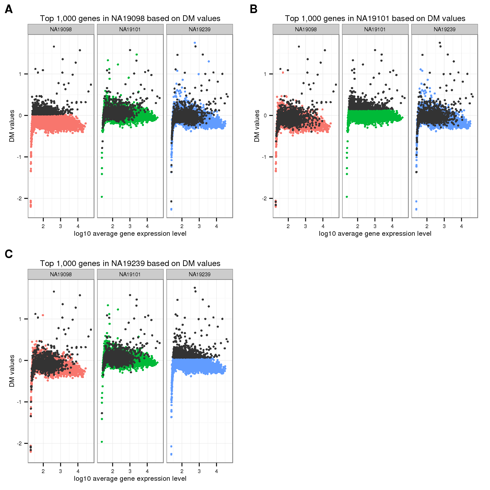
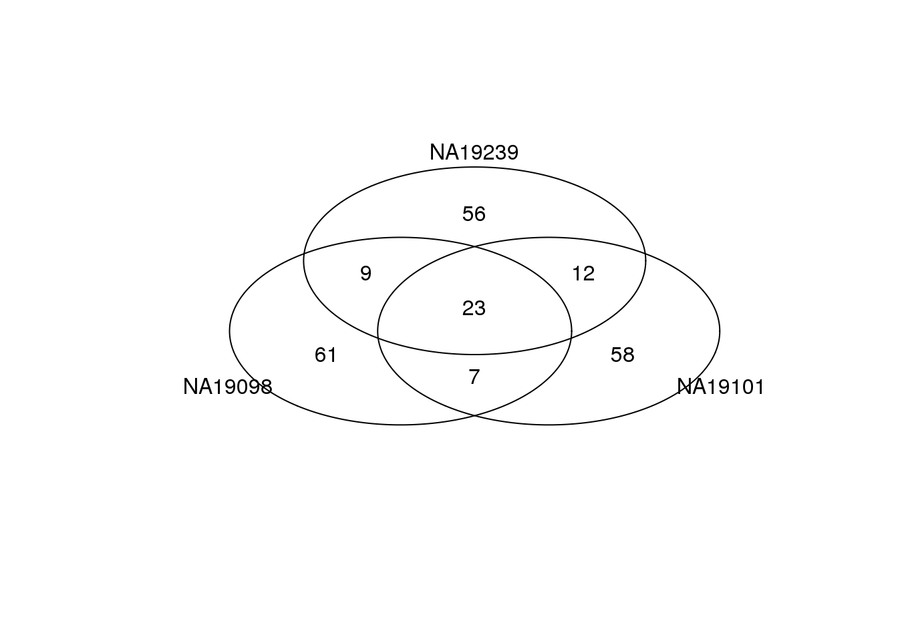
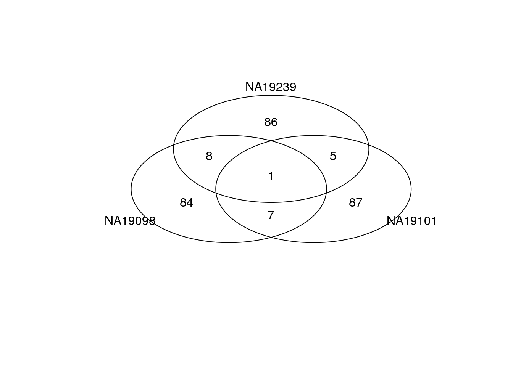
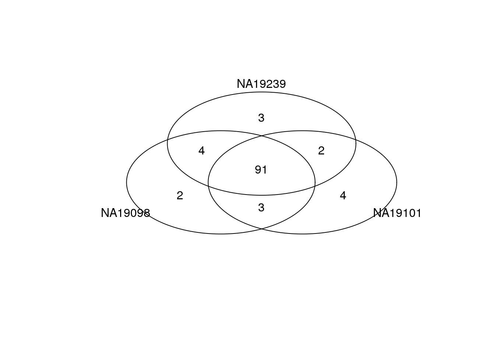

Cell-to-cell variation analysis: noisy genes among all cells
Joyce Hsiao
2016-07-08
Last updated: 2016-07-08
Code version: f3271c626c586079652907b55fa357b6f569fd26
Background and some observations
Preliminary investigation into expression noise at the transcriptional level. We looked at expression noise across all the cells, including the cells that were not detected (i.e., count = 0) in the experiment. The investigatino begins with coefficeint of variation - a popular measure for quantifying variation in the data.
Computation of CV: We were interested in the variation in our batch-corrected data. But since these data are log2-transformed counts. We take 2 to the power of log-transformed counts and then compute the CV based on these corrected counts.
Corrected CV: Because in sequencing data, CVs are confounded with abundance levels, we performed a calculation that transformed each CV into a measure of deviation from the median of the CVs from the genes of similar abudance levels.
Set up
library("data.table")
library("dplyr")
library("limma")
library("edgeR")
library("ggplot2")
library("grid")
theme_set(theme_bw(base_size = 12))
source("functions.R")
library("Humanzee")
library("cowplot")
library("MASS")
library("matrixStats")
library("mygene")Prepare data
Input annotation of only QC-filtered single cells, with NA19098.r2 removed.
anno_filter <- read.table("../data/annotation-filter.txt",
header = TRUE,
stringsAsFactors = FALSE)
dim(anno_filter)[1] 564 5head(anno_filter, 2) individual replicate well batch sample_id
1 NA19098 r1 A01 NA19098.r1 NA19098.r1.A01
2 NA19098 r1 A02 NA19098.r1 NA19098.r1.A02Import molecule counts after filtering and before any correction.
molecules_filter <- read.table("../data/molecules-filter.txt",
header = TRUE, stringsAsFactors = FALSE)
stopifnot(NROW(anno_filter) == NCOL(molecules_filter))Import final processed molecule counts of endogeneous genes.
molecules_final <- read.table("../data/molecules-final.txt",
header = TRUE, stringsAsFactors = FALSE)
dim(molecules_final)[1] 13058 564stopifnot(NROW(anno_filter) == NCOL(molecules_final))Import gene symbols.
gene_symbols <- read.table(file = "../data/gene-info.txt", sep = "\t",
header = TRUE, stringsAsFactors = FALSE, quote = "")Import cell cycle and pluripotency genes.
cell_cycle_genes <- read.table("../data/cellcyclegenes.txt",
header = TRUE, sep = "\t",
stringsAsFactors = FALSE)
pluripotency_genes <- read.table("../data/pluripotency-genes.txt",
header = TRUE, sep = "\t",
stringsAsFactors = FALSE)$ToCompute CV and adjusted CV values
- Compute Squared Coefficients of Variation across cells for each individual;
- Adjust Squared CVs for confounding effect with the mean:
- Compute rolling medians of gene expression levels,
- Compute Squared CVs corresponding to rolling medians of gene expression levels, deviation of adjusted CVs.
Sanity-check plots.
Supplemenetal for the Methods section.
theme_set(theme_bw(base_size = 8))
plot_grid(
ggplot(data.frame(log10cv_1 = log10(ENSG_cv_adj$NA19098$cv^2),
log10cv_2 = log10(ENSG_cv_adj$NA19101$cv^2)),
aes(x = log10cv_1, y = log10cv_2)) +
geom_point(cex = .4) +
xlab("NA19098 log10 squared-CV values") +
ylab("NA19101 log10 squared-CV values") +
ggtitle("Relationship between individual DM values") +
theme(legend.position = "none"),
ggplot(data.frame(dm1 = ENSG_cv_adj$NA19098$log10cv2_adj,
dm2 = ENSG_cv_adj$NA19101$log10cv2_adj),
aes(x = dm1, y = dm2)) +
geom_point(cex = .4) +
xlab("NA19098 DM values") +
ylab("NA19101 DM values") +
ggtitle("Relationship between individual DM values") +
theme(legend.position = "none"),
ggplot(data.frame(dm = ENSG_cv_adj$NA19098$log10cv2_adj,
log10_mean = log10(ENSG_cv_adj$NA19098$mean)),
aes(x = log10_mean, y = dm)) +
geom_point(cex = .4) +
xlab("log10 average molecule count") +
ylab("DM values") +
ggtitle("NA19098") +
theme(legend.position = "none"),
ggplot(data.frame(dm = ENSG_cv_adj$NA19101$log10cv2_adj,
log10_mean = log10(ENSG_cv_adj$NA19101$mean)),
aes(x = log10_mean, y = dm)) +
geom_point(cex = .4) +
xlab("log10 average molecule count") +
ylab("DM values") +
ggtitle("NA19101") +
theme(legend.position = "none"),
ggplot(data.frame(dm = ENSG_cv_adj$NA19239$log10cv2_adj,
log10_mean = log10(ENSG_cv_adj$NA19239$mean)),
aes(x = log10_mean, y = dm)) +
geom_point(cex = .4) +
xlab("log10 average molecule count") +
ylab("DM values") +
ggtitle("NA19239") +
theme(legend.position = "none"),
ncol = 2,
labels = LETTERS[1:5] )
Check pluripotency and cell-cycle
Mark cell-cycle genes.
genes <- rownames(ENSG_cv[[1]])
ii_cellcycle_genes <- lapply(1:3, function(per_individual) {
genes %in% unlist(cell_cycle_genes)
})
names(ii_cellcycle_genes) <- names(ENSG_cv)[1:3]
ii_cellcycle_genes <- do.call(c, ii_cellcycle_genes)
ggplot(data.frame(do.call(rbind, ENSG_cv_adj[1:3]),
dm = c(ENSG_cv_adj$NA19098$log10cv2_adj,
ENSG_cv_adj$NA19101$log10cv2_adj,
ENSG_cv_adj$NA19239$log10cv2_adj) ),
aes(x = log10(mean), y = dm )) +
geom_point(aes(col = group), cex = 1.2) + facet_wrap( ~ group) +
ggtitle("Cell-cycle genes") +
geom_point(
data = subset(data.frame(do.call(rbind, ENSG_cv_adj[1:3]),
dm = c(ENSG_cv_adj$NA19098$log10cv2_adj,
ENSG_cv_adj$NA19101$log10cv2_adj,
ENSG_cv_adj$NA19239$log10cv2_adj) ),
ii_cellcycle_genes),
colour = "grey20", cex = 1.2) +
labs(x = "log10 average gene expression level",
y = "DM values")
Mark pluripotent genes
ii_pluripotent_genes <- lapply(1:3, function(per_individual) {
genes %in% unlist(pluripotency_genes)
})
names(ii_pluripotent_genes) <- names(ENSG_cv)[1:3]
ii_pluripotent_genes <- do.call(c, ii_pluripotent_genes)
ggplot(data.frame(do.call(rbind, ENSG_cv_adj[1:3]),
dm = c(ENSG_cv_adj$NA19098$log10cv2_adj,
ENSG_cv_adj$NA19101$log10cv2_adj,
ENSG_cv_adj$NA19239$log10cv2_adj) ),
aes(x = log10(mean), y = dm )) +
geom_point(aes(col = group), cex = 1.2) + facet_wrap( ~ group) +
ggtitle("Pluripotent genes") +
geom_point(
data = subset(data.frame(do.call(rbind, ENSG_cv_adj[1:3]),
dm = c(ENSG_cv_adj$NA19098$log10cv2_adj,
ENSG_cv_adj$NA19101$log10cv2_adj,
ENSG_cv_adj$NA19239$log10cv2_adj) ),
ii_pluripotent_genes),
colour = "grey20", cex = 1.2) +
labs(x = "log10 average gene expression level",
y = "DM values")
Top ranked DM genes
Venn diagram, 1000 genes
Top 1000 genes based on DM.
genes <- rownames(ENSG_cv[[1]])
library(gplots)
venn_cv_rank <- gplots::venn(
list(NA19098 = genes[ which( rank(ENSG_cv_adj$NA19098$log10cv2_adj)
> length(genes) - 1000 ) ],
NA19101 = genes[ which( rank(ENSG_cv_adj$NA19101$log10cv2_adj)
> length(genes) - 1000 ) ],
NA19239 = genes[ which( rank(ENSG_cv_adj$NA19239$log10cv2_adj)
> length(genes) - 1000 ) ] ))
Bottom 1000 genes based on DM.
genes <- rownames(ENSG_cv[[1]])
library(gplots)
gplots::venn(
list(NA19098 = genes[ which( rank(ENSG_cv_adj$NA19098$log10cv2_adj)
<= 1000 ) ],
NA19101 = genes[ which( rank(ENSG_cv_adj$NA19101$log10cv2_adj)
<= 1000 ) ],
NA19239 = genes[ which( rank(ENSG_cv_adj$NA19239$log10cv2_adj)
<= 1000 ) ] ))
Top 1000 genes based on Means.
genes <- rownames(ENSG_cv[[1]])
library(gplots)
gplots::venn(
list(NA19098 = genes[ which(rank(ENSG_cv[[1]]$mean) > length(genes) - 1000 ) ],
NA19101 = genes[ which(rank(ENSG_cv[[2]]$mean) > length(genes) - 1000 ) ],
NA19239 = genes[ which(rank(ENSG_cv[[3]]$mean) > length(genes) - 1000 ) ] ) )
Mark top ranked genes based on individual DM values.
df_plot <- data.frame(
cvs = c(ENSG_cv_adj[[1]]$log10cv2_adj, ENSG_cv_adj[[2]]$log10cv2_adj,
ENSG_cv_adj[[3]]$log10cv2_adj),
means = c(ENSG_cv[[1]]$mean, ENSG_cv[[2]]$mean, ENSG_cv[[3]]$mean),
individual = as.factor(rep(names(ENSG_cv)[1:3], each = NROW(ENSG_cv[[1]])) ) )
cowplot::plot_grid(
ggplot( df_plot,
aes(x = log10(means), y = cvs ) ) +
geom_point( aes(col = as.factor(individual)), cex = 1.2 ) +
facet_wrap( ~ individual) +
labs(x = "log10 average gene expression level",
y = "DM values") +
geom_point(
data = df_plot[ rep( rank(ENSG_cv_adj$NA19098$log10cv2_adj)
> length(genes) - 1000, 3), ],
colour = "grey20", cex = 1.2 ) +
ggtitle("Top 1,000 genes in NA19098 based on DM values") +
theme(legend.position = "none"),
ggplot( df_plot,
aes(x = log10(means), y = cvs ) ) +
geom_point( aes(col = as.factor(individual)), cex = 1.2 ) +
facet_wrap( ~ individual) +
labs(x = "log10 average gene expression level",
y = "DM values") +
geom_point(
data = df_plot[ rep( rank(ENSG_cv_adj$NA19101$log10cv2_adj)
> length(genes) - 1000, 3), ],
colour = "grey20", cex = 1.2 ) +
ggtitle("Top 1,000 genes in NA19101 based on DM values") +
theme(legend.position = "none"),
ggplot( df_plot,
aes(x = log10(means), y = cvs ) ) +
geom_point( aes(col = as.factor(individual)), cex = 1.2 ) +
facet_wrap( ~ individual) +
labs(x = "log10 average gene expression level",
y = "DM values") +
geom_point(
data = df_plot[ rep( rank(ENSG_cv_adj$NA19239$log10cv2_adj)
> length(genes) - 1000, 3), ],
colour = "grey20", cex = 1.2 ) +
ggtitle("Top 1,000 genes in NA19239 based on DM values") +
theme(legend.position = "none"),
labels = LETTERS[1:4] ) 
Venn diagram, 100 genes
Top 100 genes based on DM.
genes <- rownames(ENSG_cv[[1]])
library(gplots)
venn_cv_rank <- gplots::venn(
list(NA19098 = genes[ which( rank(ENSG_cv_adj$NA19098$log10cv2_adj)
> length(genes) - 100 ) ],
NA19101 = genes[ which( rank(ENSG_cv_adj$NA19101$log10cv2_adj)
> length(genes) - 100 ) ],
NA19239 = genes[ which( rank(ENSG_cv_adj$NA19239$log10cv2_adj)
> length(genes) - 100 ) ] ))
Bottom 100 genes based on DM.
genes <- rownames(ENSG_cv[[1]])
library(gplots)
gplots::venn(
list(NA19098 = genes[ which( rank(ENSG_cv_adj$NA19098$log10cv2_adj)
<= 100 ) ],
NA19101 = genes[ which( rank(ENSG_cv_adj$NA19101$log10cv2_adj)
<= 100 ) ],
NA19239 = genes[ which( rank(ENSG_cv_adj$NA19239$log10cv2_adj)
<= 100 ) ] ))
Top 100 genes based on Means.
genes <- rownames(ENSG_cv[[1]])
library(gplots)
gplots::venn(
list(NA19098 = genes[ which(rank(ENSG_cv[[1]]$mean) > length(genes) - 100 ) ],
NA19101 = genes[ which(rank(ENSG_cv[[2]]$mean) > length(genes) - 100 ) ],
NA19239 = genes[ which(rank(ENSG_cv[[3]]$mean) > length(genes) - 100 ) ] ) )
GO analysis - individual top genes
Analyze top 1,000 genes in DM values.
# output top 1000 genes in DM values
top1000DM_genes <-
data.frame(NA19098 = genes[ which( rank(ENSG_cv_adj$NA19098$log10cv2_adj)
> length(genes) - 1000 ) ],
NA19101 = genes[ which( rank(ENSG_cv_adj$NA19101$log10cv2_adj)
> length(genes) - 1000 ) ],
NA19239 = genes[ which( rank(ENSG_cv_adj$NA19239$log10cv2_adj)
> length(genes) - 1000 ) ],
stringsAsFactors = FALSE)
# write the gene names out to a text file,
# then copy and paste to GO Consortium interface
for (ind in c("NA19098", "NA19101", "NA19239")) {
write.table(top100DM_genes[[ind]],
file = paste0("../data/top-100-dm-",ind,".txt"),
sep = "/t", quote = FALSE,
col.names = FALSE, row.names = FALSE)
}
for (ind in c("NA19098", "NA19101", "NA19239")) {
write.table(top1000DM_genes[[ind]],
file = paste0("../data/top-1000-dm-",ind,".txt"),
sep = "/t", quote = FALSE,
col.names = FALSE, row.names = FALSE)
}
write.table(rownames(molecules_final),
file = "../data/gene-names.txt",
sep = "/t", quote = FALSE,
col.names = FALSE, row.names = FALSE)GO consortium
We found no significant GO terms in PANTHER database.
GOStats
Not yet figured out how to get genes associated with each sig. GO terms.
[Chunk not evaluated]
require(Humanzee)
# Find GO terms
go_top1000_results <- lapply(c("NA19098", "NA19101", "NA19239"),
function(individual) {
go_list <- lapply(c("BP", "MF", "CC"), function(term) {
sig_gene_go <- GOtest(rownames(molecules_final),
top1000DM_genes[[individual]],
ontology = term,
conditional.method = F)
go_data <- goHeatmapData(list(summary(sig_gene_go$GO[[term]],
pvalue = .01)))
return(go_data)
})
names(go_list) <- c("BP", "MF", "CC")
return(go_list)
})
names(go_top1000_results) <- c("NA19098", "NA19101", "NA19239")
go_gene_list <- sig_gene_go[["GO"]][[1]]@goDag@nodeData@data
go_gene_list_names <- names(go_gene_list)
go_sig <- which(go_gene_list_names %in% go_data[,1])
go_gene_list_sig <- go_gene_list[go_sig]
length(go_gene_list_sig)
go_gene_list_sig
head(go_data)
# Plot heatmap
go_heatmap <- plotHeatmap(go_data,
labCol = "")CPDB
ConsensusPATHDB-Human was used to perform GO over-representation analysis.
NA19098
go_NA19098 <-
read.table("figure/cv-adjusted-summary-pois.Rmd/go-cpdb-top-1000-dm-NA19098.tab",
sep = "\t",
header = TRUE)
go_NA19098_sig <- go_NA19098[go_NA19098$q.value < .1, ]
go_NA19098_sig$term_name [1] response to oxygen levels
[2] response to decreased oxygen levels
[3] response to hypoxia
[4] sarcoplasmic reticulum
[5] very-low-density lipoprotein particle receptor activity
[6] mononuclear cell migration
[7] response to hyperoxia
[8] condensed nuclear chromosome, centromeric region
[9] condensed nuclear chromosome kinetochore
[10] calcium ion binding
[11] carbohydrate derivative transporter activity
59 Levels: base-excision repair, AP site formation ...NA19101
go_NA19101 <- read.table("figure/cv-adjusted-summary-pois.Rmd/go-cpdb-top-1000-dm-NA19101.tab",
sep = "\t",
header = TRUE)
head(go_NA19101$q.value)[1] 0.008862498 0.015732966 0.033066707 0.142366905 0.142366905 0.138059112go_NA19101_sig <- go_NA19101[go_NA19101$q.value < .1, ]
go_NA19101_sig$term_name[1] mononuclear cell migration
[2] regulation of mononuclear cell migration
[3] multicellular organismal response to stress
[4] glutathione derivative metabolic process
56 Levels: acid-amino acid ligase activity ... xenobiotic metabolic processNA19239
go_NA19239 <- read.table("figure/cv-adjusted-summary-pois.Rmd/go-cpdb-top-1000-dm-NA19239.tab",
sep = "\t",
header = TRUE)
go_NA19239_sig <- go_NA19239[go_NA19239$q.value < .1, ]
go_NA19239_sig$term_name [1] extracellular space
[2] fibronectin binding
[3] calcium ion binding
[4] heparin binding
[5] basement membrane
[6] proteinaceous extracellular matrix
[7] sulfur compound binding
[8] response to zinc ion
[9] plasma membrane region
[10] extracellular matrix disassembly
[11] cell adhesion
[12] glycosaminoglycan binding
[13] cell projection membrane
[14] regulation of growth
[15] intrinsic component of membrane
[16] regulation of multicellular organismal process
[17] response to transition metal nanoparticle
[18] cytoskeletal protein binding
[19] actin binding
[20] anatomical structure morphogenesis
[21] integral component of membrane
[22] organ development
[23] cartilage development
[24] hormone metabolic process
[25] system process
[26] wound healing
[27] multi-multicellular organism process
[28] developmental cell growth
[29] negative regulation of growth
[30] collagen catabolic process
[31] multicellular organismal catabolic process
[32] laminin-10 complex
[33] female pregnancy
[34] retinoic acid binding
[35] connective tissue development
[36] tissue development
[37] plasma membrane
[38] lipid binding
[39] cell periphery
[40] extracellular structure organization
[41] membrane region
[42] developmental growth
[43] isoprenoid metabolic process
[44] apical plasma membrane
[45] embryo implantation
[46] response to alcohol
[47] single-multicellular organism process
[48] sodium:potassium-exchanging ATPase complex
[49] carboxylic acid binding
[50] cell growth
[51] plasma membrane part
[52] hormone activity
[53] organic acid binding
[54] developmental growth involved in morphogenesis
[55] detection of external stimulus
[56] cell-cell junction
[57] response to wounding
[58] stereocilium
[59] proteoglycan binding
[60] fibrillar collagen trimer
[61] retinoid binding
[62] banded collagen fibril
[63] actin filament-based process
[64] detection of abiotic stimulus
[65] regulation of developmental process
[66] basal lamina
[67] extracellular matrix binding
[68] cartilage development involved in endochondral bone morphogenesis
[69] transcription factor activity, sequence-specific DNA binding
[70] metal ion binding
[71] cell migration
[72] cation binding
[73] growth factor binding
[74] retinol binding
[75] glycosphingolipid binding
[76] apical part of cell
[77] collagen binding
[78] phosphatidylserine binding
[79] insulin-like growth factor binding
[80] isoprenoid binding
[81] insulin-like growth factor binding protein complex
[82] phospholipid binding
[83] extracellular matrix structural constituent
[84] single-organism developmental process
[85] cell motility
[86] localization of cell
[87] laminin complex
[88] protein-lipid complex binding
[89] apolipoprotein binding
[90] laminin binding
[91] regulation of biological quality
166 Levels: actin binding ... wound healing*Why is there so many more GO terms in NA19239 than the other two individuals?
[Chunk not evaluated]
top1000DM_genes <-
data.frame(NA19098 = genes[ which( rank(ENSG_cv_adj$NA19098$log10cv2_adj)
> length(genes) - 1000 ) ],
NA19101 = genes[ which( rank(ENSG_cv_adj$NA19101$log10cv2_adj)
> length(genes) - 1000 ) ],
NA19239 = genes[ which( rank(ENSG_cv_adj$NA19239$log10cv2_adj)
> length(genes) - 1000 ) ],
stringsAsFactors = FALSE)
par(mfrow = c(2,2))
boxplot(cbind(ENSG_cv_adj$NA19101$log10cv2_adj[which( rank(ENSG_cv_adj$NA19101$log10cv2_adj)
> length(genes) - 1000 )],
ENSG_cv_adj$NA19239$log10cv2_adj[which( rank(ENSG_cv_adj$NA19239$log10cv2_adj)
> length(genes) - 1000 )]) )
title(main = "adjusted CV")
boxplot(
cbind(ENSG_cv_adj$NA19101$mean[ which( rank(ENSG_cv_adj$NA19101$log10cv2_adj)
> length(genes) - 1000 )],
ENSG_cv_adj$NA19239$mean[which( rank(ENSG_cv_adj$NA19239$log10cv2_adj)
> length(genes) - 1000 )]) )Differential DMs
Compute median of absolute deviations (MAD) to quantify dissimilarity of the individual DM meausres.
library(matrixStats)
dm_matrix <- as.matrix(
data.frame(NA19098 = ENSG_cv_adj$NA19098$log10cv2_adj,
NA19101 = ENSG_cv_adj$NA19101$log10cv2_adj,
NA19239 = ENSG_cv_adj$NA19239$log10cv2_adj) )
mad <- rowMedians( abs( dm_matrix - rowMedians(dm_matrix) ) )Top 100 ranked genes by MAD.
ConsensusPATHDB-Human was used to perform GO over-representation analysis.
Look up top 100 genes in MAD values
mad_genes <- rownames(molecules_final)[rank(mad) >
(length(mad) - 100) ]
#write.table(mad_genes,
# file = "../data/mad-genes.txt",
# sep = "\t", quote = FALSE,
# col.names = FALSE, row.names = FALSE)library(mygene)
go_top <- read.table("figure/cv-adjusted-summary-pois.Rmd/go-cpdb-all-top.tab",
sep = "\t",
header = TRUE)
go_top <- go_top[go_top$q.value < .1, ]
as.character(go_top$term_name)[1] "extracellular space" "ErbB-2 class receptor binding"# go_top_genes <- getGenes(gsub(";", ",",
# as.character(go_top$members_input_overlap_geneids)))
# go_top_genes <- go_top_genes[!duplicated(go_top_genes[ , "symbol"]), ]
# kable(data.frame(symbol =go_top_genes[ ,"symbol"],
# name = go_top_genes[,"name"]) )Session information
sessionInfo()R version 3.2.0 (2015-04-16)
Platform: x86_64-unknown-linux-gnu (64-bit)
locale:
[1] LC_CTYPE=en_US.UTF-8 LC_NUMERIC=C
[3] LC_TIME=en_US.UTF-8 LC_COLLATE=en_US.UTF-8
[5] LC_MONETARY=en_US.UTF-8 LC_MESSAGES=en_US.UTF-8
[7] LC_PAPER=en_US.UTF-8 LC_NAME=C
[9] LC_ADDRESS=C LC_TELEPHONE=C
[11] LC_MEASUREMENT=en_US.UTF-8 LC_IDENTIFICATION=C
attached base packages:
[1] stats4 parallel grid stats graphics grDevices utils
[8] datasets methods base
other attached packages:
[1] gplots_2.17.0 mygene_1.2.3 GenomicFeatures_1.20.1
[4] AnnotationDbi_1.30.1 Biobase_2.28.0 GenomicRanges_1.20.5
[7] GenomeInfoDb_1.4.0 IRanges_2.2.4 S4Vectors_0.6.0
[10] BiocGenerics_0.14.0 matrixStats_0.14.0 MASS_7.3-40
[13] cowplot_0.3.1 Humanzee_0.1.0 ggplot2_1.0.1
[16] edgeR_3.10.2 limma_3.24.9 dplyr_0.4.2
[19] data.table_1.9.4 knitr_1.10.5
loaded via a namespace (and not attached):
[1] httr_0.6.1 jsonlite_0.9.16
[3] splines_3.2.0 gsubfn_0.6-6
[5] gtools_3.5.0 Formula_1.2-1
[7] assertthat_0.1 highr_0.5
[9] latticeExtra_0.6-26 Rsamtools_1.20.4
[11] yaml_2.1.13 RSQLite_1.0.0
[13] lattice_0.20-31 chron_2.3-45
[15] digest_0.6.8 RColorBrewer_1.1-2
[17] XVector_0.8.0 colorspace_1.2-6
[19] htmltools_0.2.6 plyr_1.8.3
[21] XML_3.98-1.2 biomaRt_2.24.0
[23] zlibbioc_1.14.0 scales_0.4.0
[25] gdata_2.16.1 BiocParallel_1.2.2
[27] sqldf_0.4-10 nnet_7.3-9
[29] proto_0.3-10 survival_2.38-1
[31] magrittr_1.5 evaluate_0.7
[33] foreign_0.8-63 tools_3.2.0
[35] formatR_1.2 stringr_1.0.0
[37] munsell_0.4.3 cluster_2.0.1
[39] lambda.r_1.1.7 Biostrings_2.36.1
[41] caTools_1.17.1 futile.logger_1.4.1
[43] RCurl_1.95-4.6 bitops_1.0-6
[45] labeling_0.3 rmarkdown_0.6.1
[47] gtable_0.1.2 DBI_0.3.1
[49] reshape2_1.4.1 R6_2.1.1
[51] GenomicAlignments_1.4.1 gridExtra_2.0.0
[53] rtracklayer_1.28.4 Hmisc_3.16-0
[55] futile.options_1.0.0 KernSmooth_2.23-14
[57] stringi_1.0-1 Rcpp_0.12.4
[59] rpart_4.1-9 acepack_1.3-3.3